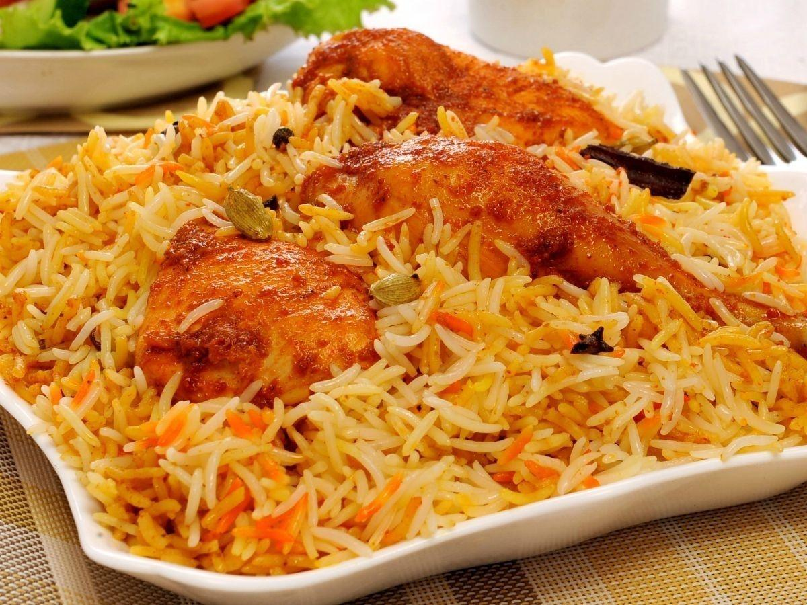

Tourists visiting Telangana can relish both Hyderabadi ethnic cuisines and Telangana local specialities. Hyderabad is known for biryani, haleem, bagara baigon, mirchi ka salan, double ka meetha, kurbani ka meetha, dum ka murgh, pattar ka gosh, mandi, kebabs, paya, phirni, etc. The city has got recognition by UNESCO as a “Creative City of Gastronomy”. Some local delicacies are: jowar roti, sajja roti, with bagara baingan, meat fry and other dishes that are savoury, along with curries and pickles, and snacks like sarvapindi, malidalu, sakinalu, garijalu, etc.z